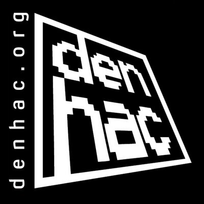

PQCScan
A scanner for post-quantum cryptography — checks systems for quantum-resistant readiness.
I'm Saad Baig, a security engineer focused on offensive security — penetration testing, reverse engineering, and building open-source tooling that makes hard problems easier. I like taking systems apart to understand exactly how they break, then turning that into practical defenses and tools. I'm also a public speaker, having presented my research at conferences including RMISC, IEEE, BSides, and OWASP. Currently exploring post-quantum security and always open to interesting problems.


Conferences and organizations where I've presented my research and work.


